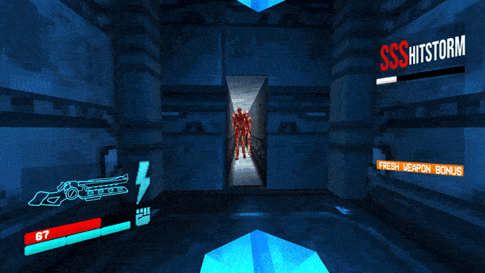
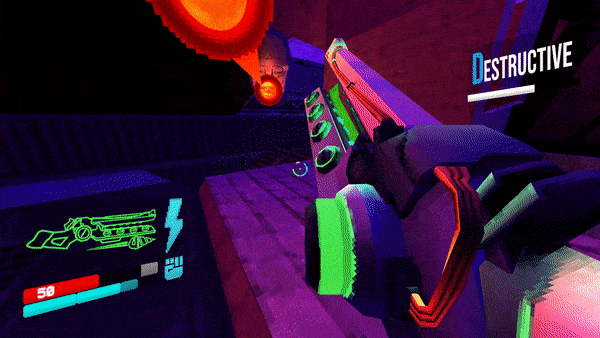

Another powerful weapon V1 can get is Railcannon — heavy, single-shot energy weapon that fires massive beam with insane speed and power. It has no ammo, but long cooldown after each shot. Railcannon instantly vaporizes weaker enemies and deals huge damage to tough ones. There are two variants of Railcannon. First is Electric Railcannon — it fires blue energy beam what pierces infinite amount of enemies. Second is Screwdriver Railcannon — slower, but fires a screw what stays in enemy what keeps hurting enemies and let V1 to heal more easily. All Railcannons have same cooldown, and blue one can ricochet from coins, just like revolver, for extra stylish kills and precision shots. Firing a direct piercing beam at its target, the Electric Railcannon has the simplest base mechanics of any of the Railcannon variants. At its most basic, it can be used as a form of occasional burst damage against bulky enemies or crowds. Of all the Railcannon variants, the Electric is the one which relies most on good positioning to maximize its potential. It can be used well in close quarters where groups of enemies are closer together, allowing the player to line up a shot and hit many at once. A player can pay close attention to the relative locations of high-priority enemies and determine where it is possible to line up a straight shot and hit the most at once. This lends itself well to the use of the Marksman Revolver, whose coin lock-on can, in many cases, make it easier to line up potential shots.
ULTRAKILL WEAPONS GUIDE

Blue Railcannon

Green Railcannon